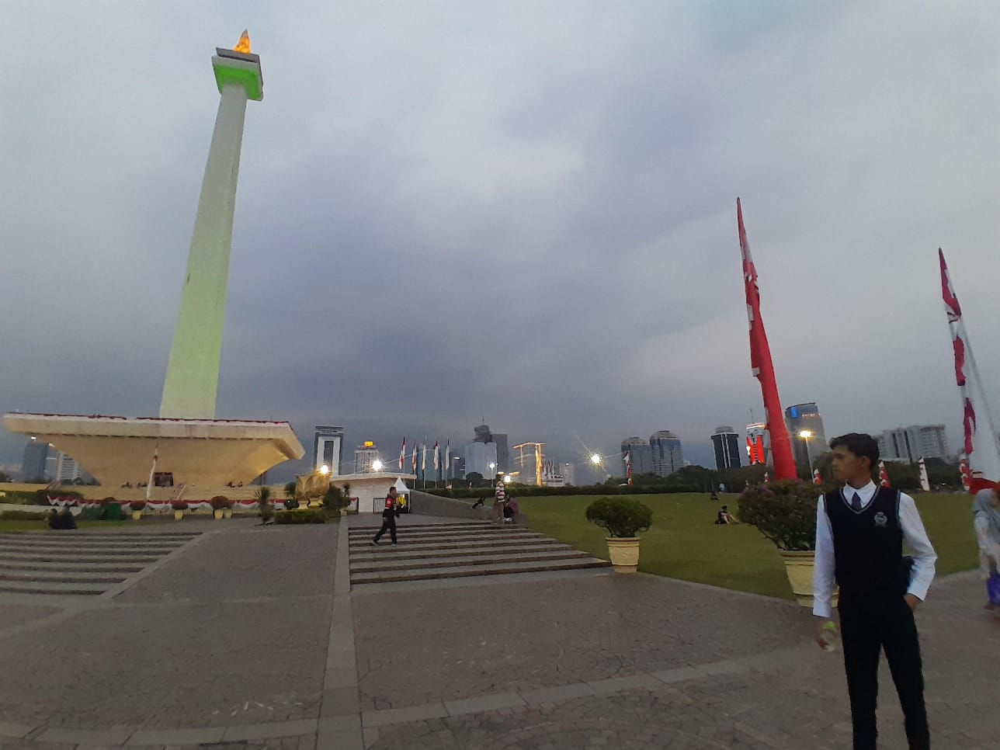
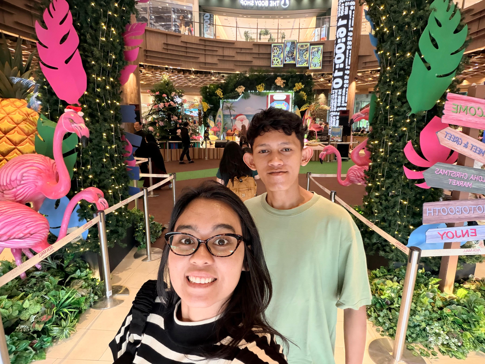
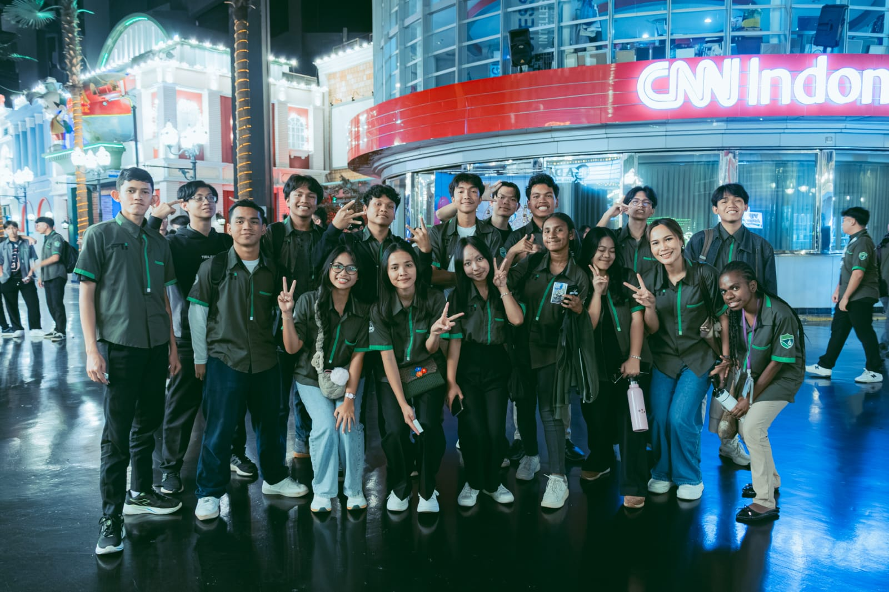
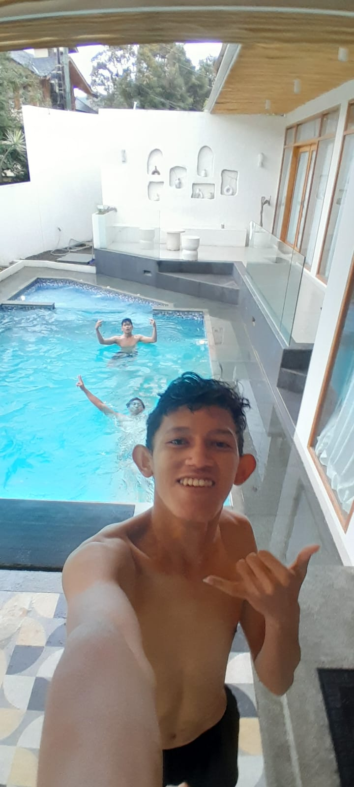
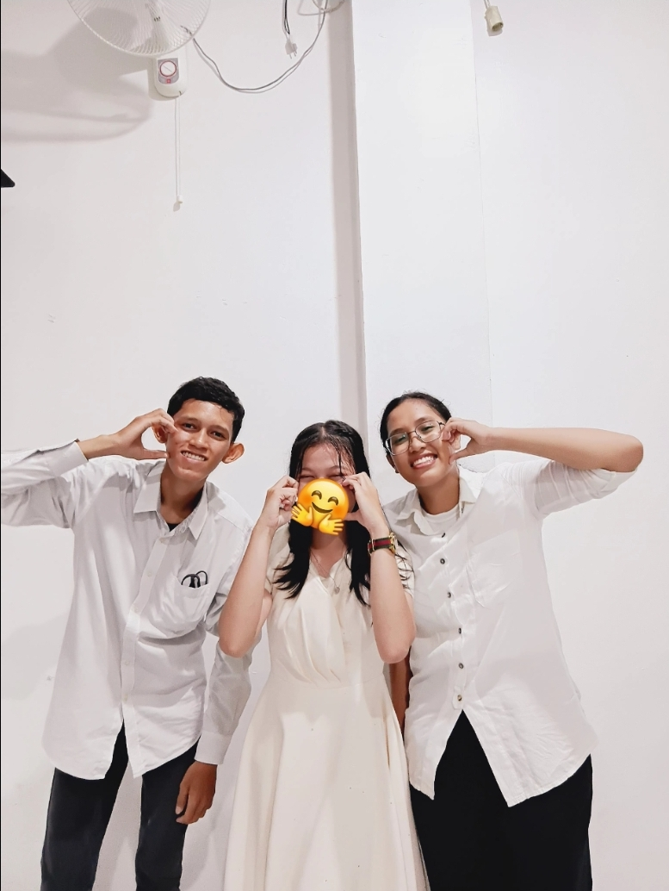
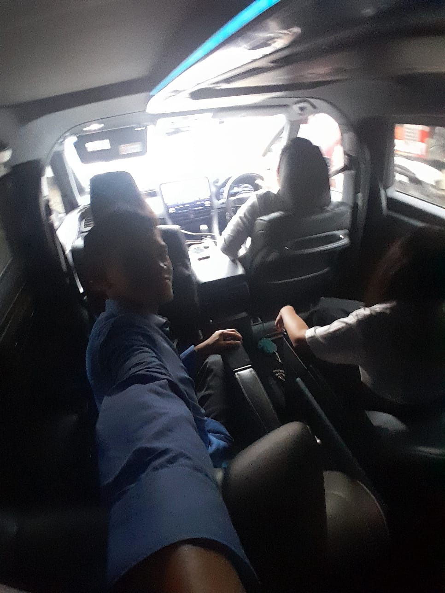
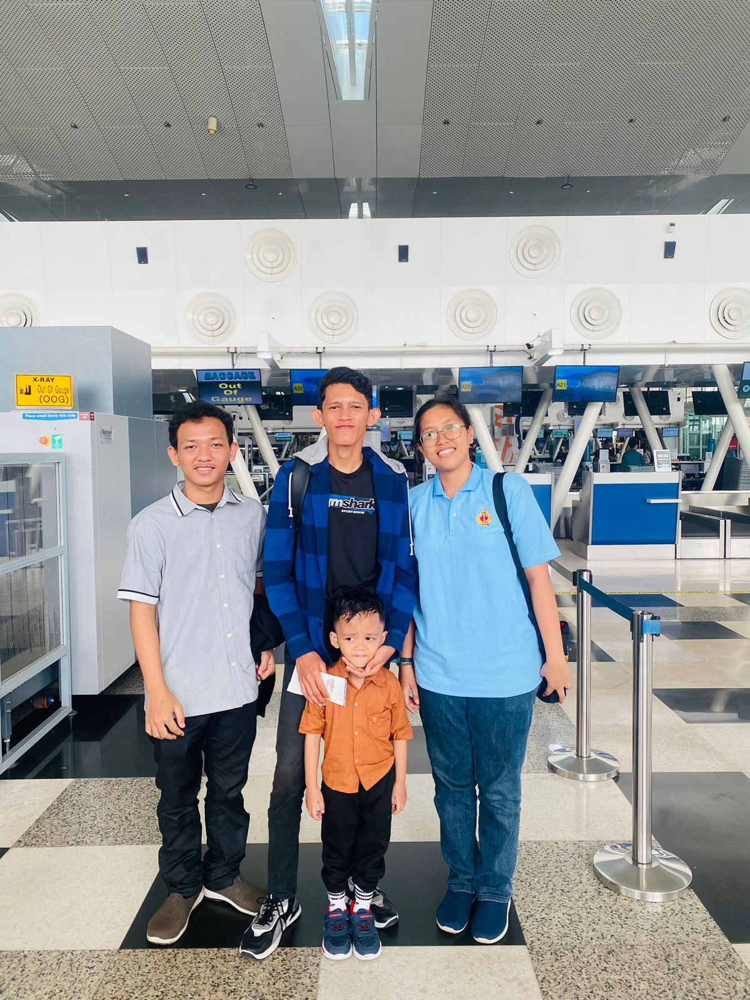

Bagi saya, perjalanan dan kegiatan di luar ruangan adalah sarana penting untuk menyegarkan pikiran setelah melalui rutinitas perkuliahan, menambah wawasan kebudayaan, serta mempererat tali persaudaraan. Setiap momen yang diabadikan menyimpan cerita berharga—mulai dari kemegahan tugu bersejarah di Jakarta, semaraknya kegiatan fieldtrip FTI UNAI di Trans Studio Bandung, relaksasi berenang di sejuknya Lembang, hingga kehangatan keluarga di Bandara Kualanamu. Seluruh galeri di bawah ini disusun menggunakan teknik tata letak CSS Flexbox agar tertata seimbang dan responsif di seluruh ukuran layar.

1. Di Monumen Nasional (MONAS)
Mengunjungi Monumen Nasional di kawasan Jakarta Pusat pada sore hari. Menikmati kemegahan tugu perjuangan bangsa dengan taman kota yang asri dan lanskap gedung-gedung bertingkat ibu kota.

2. Di Mall Jakarta
Menghabiskan waktu santai bersama kerabat di salah satu pusat perbelanjaan modern Jakarta. Mengabadikan foto bersama di tengah dekorasi bertema tropis dan instalasi pohon natal yang semarak.

3. Fieldtrip UNAI Trans Studio Bandung
Kegiatan fieldtrip kampus bersama teman-teman Fakultas Teknologi Informasi UNAI di Trans Studio Bandung. Momen kekompakan seluruh angkatan saat berfoto bersama di depan studio siaran CNN Indonesia.

4. Liburan di Villa VIB (Villa Istana Bunga)
Menikmati waktu liburan akhir pekan bersama sahabat di Villa Istana Bunga (VIB) Parongpong, Lembang. Menyegarkan raga dengan berenang dan menikmati udara pegunungan Bandung Barat yang sejuk.

5. Acara Duta Anti Narkotika
Partisipasi dalam seminar sosial dan pemilihan Duta Anti Narkotika bersama rekan-rekan sebaya. Turut mengampanyekan gaya hidup generasi muda yang sehat, aktif, dan bebas dari ancaman narkotika.

6. Jalan ke Gereja saat Weekend
Rutinitas akhir pekan melakukan perjalanan bersama para sahabat menuju gereja untuk beribadah. Suasana di sepanjang jalan dipenuhi obrolan hangat, doa, dan mempererat tali persekutuan.

7. Di Bandara Internasional Kualanamu
Mengabadikan momen bersama keluarga dan keponakan di area keberangkatan Bandara Internasional Kualanamu (KNO), Sumatera Utara saat bersiap terbang kembali ke Bandung untuk perkuliahan semester baru.